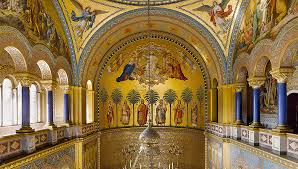
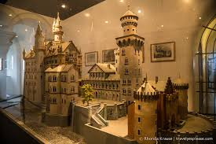
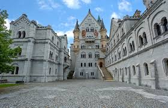
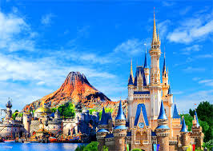
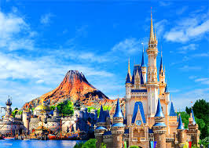
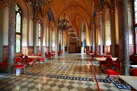
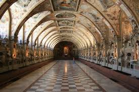
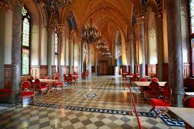
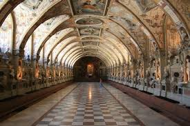

Foto Utama




Kastil Dongeng Bavaria yang Menginspirasi Dunia
Istana Neuschwanstein terletak di:
Neuschwansteinstraße 20,Istana ini berdiri megah di puncak bukit terpencil di Pegunungan Alpen Bavaria, dekat desa Hohenschwangau dan Füssen.
Istana Neuschwanstein adalah kastil bergaya Romanesque Revival abad ke-19 yang terletak di bukit terpencil di Bavaria, Jerman. Kastil ini dibangun atas perintah Raja Ludwig II dari Bavaria sebagai penghormatan kepada komposer Richard Wagner dan telah menjadi salah satu tujuan wisata paling populer di Eropa.
Dikenal sebagai "kastil dongeng" yang menginspirasi Kastil Sleeping Beauty Disney, Neuschwanstein menawarkan pemandangan spektakuler pegunungan Alpen dan danau di sekitarnya. Meskipun terlihat seperti kastil abad pertengahan, Neuschwanstein dilengkapi dengan teknologi modern untuk zamannya, termasuk sistem pemanas udara pusat, air mengalir di semua lantai, dan toilet dengan sistem penyiraman otomatis.
Pembangunan Istana Neuschwanstein dimulai pada tahun 1869 di atas reruntuhan dua kastil abad pertengahan. Raja Ludwig II membiayai pembangunan dengan uang pribadinya dan melalui pinjaman besar, bukan dengan uang negara Bavaria.
Sayangnya, Raja Ludwig II hanya sempat tinggal di istana ini selama 172 hari sebelum kematiannya yang misterius pada tahun 1886. Pada saat itu, hanya sepertiga dari rencana interior yang telah selesai. Hanya tujuh minggu setelah kematiannya, istana ini dibuka untuk umum.
Selama Perang Dunia II, istana ini digunakan oleh Nazi sebagai gudang untuk karya seni yang dijarah. Untungnya, istana ini tidak mengalami kerusakan selama perang.
Istana Neuschwanstein buka untuk kunjungan sepanjang tahun dengan jadwal berikut:
Catatan: Kunjungan hanya dilakukan dengan tur berpemandu yang berlangsung sekitar 35 menit. Tiket harus dipesan terlebih dahulu, terutama di musim panas.
Catatan: Harga termasuk biaya reservasi online €2.50. Tiket hanya dapat dibeli di Pusat Tiket Hohenschwangau, bukan di istana itu sendiri.
Istana Neuschwanstein dirancang oleh arsitek Christian Jank dan direalisasikan oleh Eduard Riedel. Gaya arsitekturnya adalah Romanesque Revival, terinspirasi oleh kastil-kastil Jerman abad pertengahan.
Fitur arsitektur yang menonjol:
 

.jpg)
 




Pusat Tiket Hohenschwangau:
Alpenstraße 12, 87645 Schwangau, Jerman
Telepon: +49 (0)8362 93083-0
Email: info@ticket-center-hohenschwangau.de
Website Resmi: www.neuschwanstein.de
Untuk reservasi online: www.hohenschwangau.de